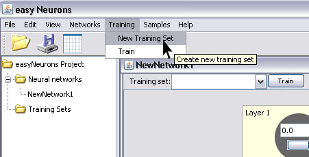

Perceptron is a simple two layer neural network with several neurons in input layer, and one or more neurons in output layer. All neurons use step transfer function and network can use LMS based learning algorithm such as Perceptron Learning or Delta Rule. This network can be used as a linear classifier, and it can only be applied to linear separable problems.
To create and train Perceptron neural network with easyNeurons do the following:
Step 1. To create Perceptron network, in main menu click Networks > Perceptron
Step 2. In new perceptron dialog enter number of neurons in input (2) and output layer (1) , and click Create button.
This will create the Perceptron neural network with two neurons in input, and one in output layer. By default, all neurons will have Step transfer functions.
Now we shall train this simple network to learn logical AND function. First we have to create the training set according to AND truth table.
Step 3. In main menu click Training > New Training Set to open training set wizard.

Enter training set name, number of inputs and outputs as shown on picture below and click Create button.
Then create training set by entering training elements as input and desired output values of neurons in input and output layer. Use Add row button to add new elements, and click OK button when finished.
Step 4. To start network training procedure, in network window select training set from drop down list and click Train button.
In Set Learning parameters dialog use default learning parameters, and just click the Train button.
When the Total Net Error is zero, the training is complete.
Step 5.After the training is complete, you can test network by using Set Input button.
This opens Set Network Input dialog in which you can enter input values for network separated with space.
The result of network test is shown on picture below. Network learned logical AND function. As we can see the output neuron has value 0. Test the network to see how it behaves for other input values.
You can select graph view from main menu View > Graph to see different network view.
In graph view, you can turn on the display of activation levels and connection weights, change display layout and mouse mode so you can transform or zoom network.
package org.neuroph.samples;
import org.neuroph.core.NeuralNetwork;
import org.neuroph.nnet.Perceptron;
import org.neuroph.core.learning.TrainingSet;
import org.neuroph.core.learning.TrainingElement;
import org.neuroph.core.learning.SupervisedTrainingElement;
import java.util.Vector;
/**
* This sample shows how to create, train, save and load simple Perceptron neural network
*/
public class PerceptronSample {
public static void main(String args[]) {
// create training set (logical AND function)
TrainingSet trainingSet = new TrainingSet();
trainingSet.addElement(new SupervisedTrainingElement(new double[]{0, 0}, new double[]{0}));
trainingSet.addElement(new SupervisedTrainingElement(new double[]{0, 1}, new double[]{0}));
trainingSet.addElement(new SupervisedTrainingElement(new double[]{1, 0}, new double[]{0}));
trainingSet.addElement(new SupervisedTrainingElement(new double[]{1, 1}, new double[]{1}));// create perceptron neural network
NeuralNetwork myPerceptron = new Perceptron(2, 1);
// learn the training set
myPerceptron.learnInSameThread(trainingSet);// test perceptron
System.out.println("Testing trained perceptron");
testNeuralNetwork(myPerceptron, trainingSet);// save trained perceptron
myPerceptron.save("mySamplePerceptron.nnet");// load saved neural network
NeuralNetwork loadedPerceptron = NeuralNetwork.load("mySamplePerceptron.nnet");
// test loaded neural network
System.out.println("Testing loaded perceptron");
testNeuralNetwork(loadedPerceptron, trainingSet);}
public static void testNeuralNetwork(NeuralNetwork nnet, TrainingSet tset) {
for(TrainingElement trainingElement : tset.trainingElements()) {
nnet.setInput(trainingElement.getInput());
nnet.calculate();
Vector<Double> networkOutput = nnet.getOutput();
System.out.print("Input: " + trainingElement.getInput());
System.out.println(" Output: " + networkOutput);}
}
}
To learn more about the Perceptrons see:
http://en.wikipedia.org/wiki/Perceptron